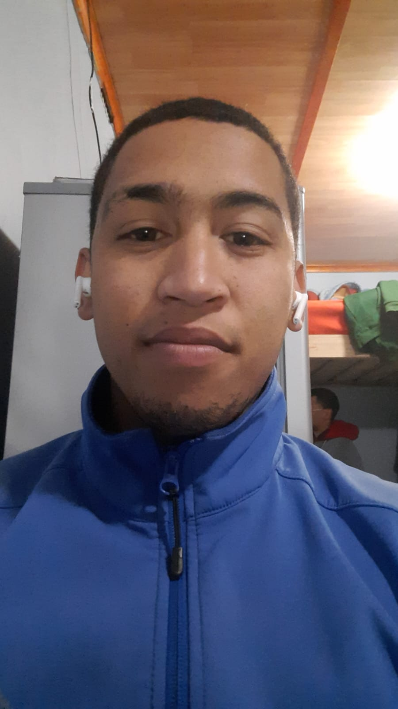

My Resume
Vincenzo Riley

Summary
Work Samples
- Project X: Description of your role and contributions. Include before-and-after examples if applicable.
- Task Y: Details of your involvement and the impact of your hard work and dedication.
Team Projects
- Team Project A: Outline your specific contributions, how you supported your team, and challenges you helped overcome.
- Collaboration B: Describe your role in achieving team goals and how your teamwork skills contributed to success.
Skills Development
- Certification in XYZ: Explain how this certification has enhanced your skills and knowledge in a specific area.
- Workshop on ABC: Discuss key takeaways and how you've applied this new knowledge in your work.
Problem Solving
- Challenge C: Describe how you quickly grasped new concepts to solve a specific problem or achieve a milestone.
- Project D: Example of applying your fast learning pace to overcome challenges and deliver results.
Commitment and Initiative
- Leadership Initiative: Explain how you took on additional responsibilities or led a project that benefited your team or organization.
- Extra Mile Effort: Describe instances where you exceeded expectations to deliver exceptional results.
Testimonials and Recommendations
- Colleague A: Quote highlighting your qualities as a hardworking team player.
- Supervisor B: Recommendation emphasizing your commitment to learning and excelling in your field.
Education
- Belhar Primary School
- Jan Kriel High School
- Boland College
Work Experience
M and L Panelbeaters
Oct,2020-Current
Skills
Other
- My Hobbies
- Contact